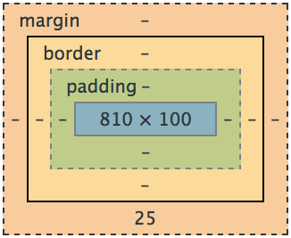

What is the difference between Margin, Border, and Padding?
In web development, margin, border, and padding are important concepts for spacing and layout. Let's explore their differences and usage.
Section 1: Understanding Margin
Margin is the space around an element, outside its border. Use margin to create spacing between elements. The code below will create space outside the border of 20px.
Example: margin: 20px;
Section 2: Exploring Border
Border is a visible line that surrounds an element, defining its boundary. Use border to add structure and differentiation. The code below will create a dark grey border of 2px.
Example: border: 2px solid #333333;
Section 3: Mastering Padding
Padding is the space between an element's content and its border. Use padding to control internal spacing and layout.
Example: padding: 10px;
The image below shows all three elements and how they work in conjunction.
